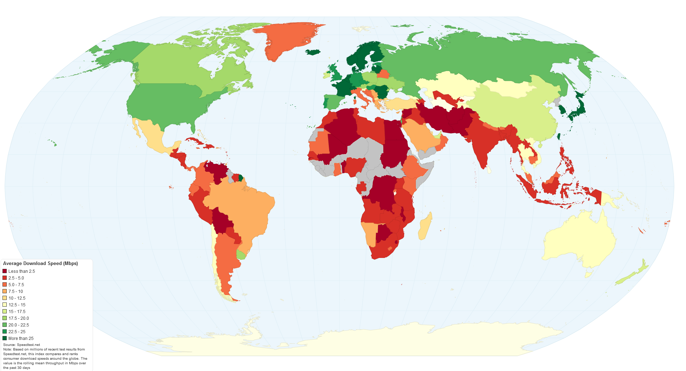
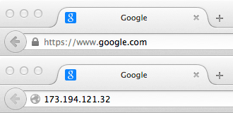
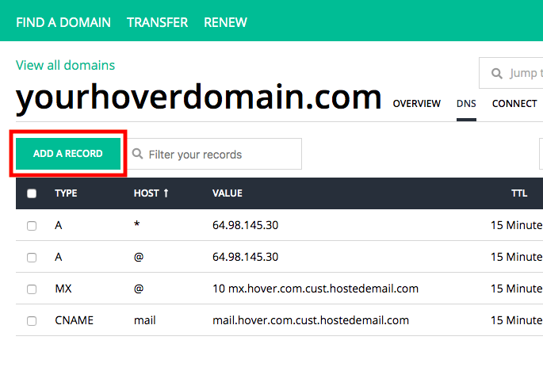
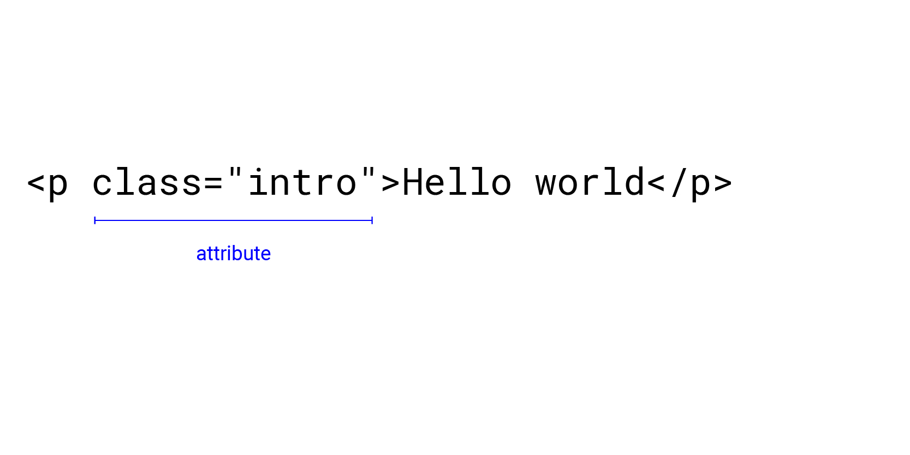
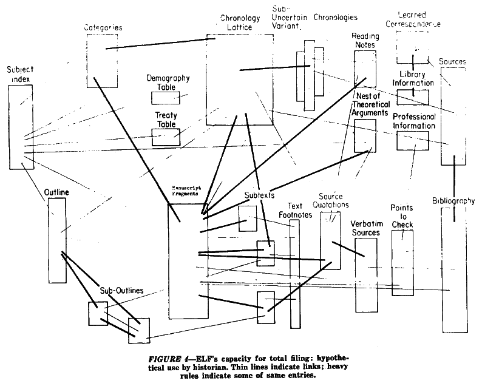

## The ABC of WWW
#### In today's highly commercialised web of multinational corporations, proprietary applications, read-only devices, search algorithms, Content Management Systems, WYSIWYG editors, and digital publishers it becomes an increasingly radical act to hand-code and self-publish experimental web art and writing projects. J.R. Carpenter, [A Handmade Web](http://luckysoap.com/statements/handmadeweb.html), 2015
Even if you’re not going to develop your own websites, it’s useful to understand how a website is made. It will give you insight into the process and build a better base of understanding when collaborate with developers. Maybe you’ll also enjoy it!
This week we'll be going through how to create a simple website: - What a website essentially is - What tools you need to start building - How to choose and buy a domain name - Where you can host your site - A little bit on GitHub and version control - The basics of HTML - Where you can learn more or ask for help - How to inspect and critically analyse websites
### Using off-the-shelf services like [Cargo](https://cargo.site/) vs hand-coding your own <!-- It’s totally ok to use off-the-shelf services like [Cargo](https://cargo.site/). In some instances, this is the best tool for the job, and making a custom site is unnecessary. With any service, you'll need to tweak the code to customise it anyway. When you use other platforms, you're beholden to their rules. You need to fit your content into their templates. After a certain point, it could be just as easy to do it yourself.-->
It's more important to think about the _why_. What does digital publishing offer that other mediums don’t? Which audiences are you trying to reach? What are you trying to say?
Web development can seem really intimidating when you’re just starting out. There's all these new frameworks, best practices – it's hard to keep up.
However, the fundamentals of the web are actually [pretty simple](http://motherfuckingwebsite.com/).
There are also lots of places online where you can learn to code or look for help when you’re stuck. If you know the basics of how it all works, and can describe your problem in words, you're halfway there.
It all boils down to the content: digital publishing is just another medium for communication.
You have HTML for structuring content, CSS for styling it…
Simple websites are more resilient, faster and more accessible – you can take them apart and look at the pieces.
Complex, JavaScript-heavy websites make all kinds of assumptions about their users.
Super fast Internet connection Browsing on desktop English-speaking Fully-sighted, able-bodied Technically savvy

## So what is a website?
At its most basic, the Internet is a large network of computers which communicate all together. The Internet is an infrastructure, whereas the Web is a service built on top of the infrastructure.
A website is basically a bunch of files living on a server somewhere.
Diagram by [Minkyoung Kim](http://minkyoungkim.com/teaching/gdfws19/)
To access those files, you need to know their address. Humans find information online through domain names, while web browsers interact through IP addresses.

### IP: Internet Protocol A string of numbers that uniquely identifies your site. You can look up a website's IP address at [https://ipinfo.info/html/ip_checker.php](https://ipinfo.info/html/ip_checker.php)
### DNS: Domain Name System The phonebook of the Internet. DNS translates domain names to IP addresses so browsers can load Internet resources.
### URL: Uniform Resource Locator
### URL: Uniform Resource Locator
### Buying domain names [gandi.net](https://www.gandi.net/en-GB) and [hover.com](https://www.hover.com/) are some good domain name registrars.
### Interlude: Every TLD has a story [Domain Stories](http://citizen-ex.com/stories) by James Bridle
### Where should your website live on your computer? When you are working on a website locally on your computer, you should keep all the related files in a single folder that mirrors the published website's file structure on the server.
### File names Many computers, particularly web servers, are case-sensitive. For example, if you put an image on your website at, `test-site/MyImage.jpg` and then in a different file you try to invoke the image as `test-site/myimage.jpg`, it may not work.
### File names They also don't handle spaces consistently, so it's safest to seperate words with dashes, e.g. `my-file.html`.
### Folder structure
### File paths
### Relative file paths Down a directory: `subdirectory/example.jpg` Up a directory: `../example.jpg`
### Publishing a website As well as buying a domain name, you'll need somewhere to host your website. If you're not using a service like Cargo, you'll need to buy your own hosting.
### Hosting a website [nearlyfreespeech.net](https://www.nearlyfreespeech.net/) is a cheap hosting service. You'll need to use FTP to transfer your files to their server.
### FTP: File Transfer Protocol Some good ones are [Filezilla](https://filezilla-project.org/) (free) or [Transmit](https://panic.com/transmit/) ($45).
### Publishing a website Once you've uploaded your files to the server, you'll need to update your domain's DNS settings to point it to the right place.

### GitHub Pages Otherwise, you can host a site directly from a GitHub repository for free with [GitHub Pages](https://pages.github.com/).
### GitHub A code hosting platform for version control and collaboration. It's built on Git, a version control system.
<img data-src="images/github.png"> Diagram from [Save your Code Revisions Forever with Git](https://github.com/Rafase282/My-FreeCodeCamp-Code/wiki/Lesson-Save-your-Code-Revisions-Forever-with-Git)
### Online code editors [Codepen](https://codepen.io/) allows you to edit and render code directly from the browser. You can use it for sharing code and debugging.
## HTML: HyperText Markup Language
### HTML = Structure ### CSS = Style ### JavaScript = Behaviour
<img data-src="images/html-content.jpg">
<img data-src="images/html-element.jpg">

### HTML attributes HTML attributes are modifiers of HTML elements. They give specific directives to HTML elements and are located inside of opening tags.
### HTML attributes One element can have multiple attibutes. `<a href="index.html" target="_blank">home</a>`
### Empty elements You can also have empty elements (without a closing tag). ``
It's a very resilient language – browsers will always be able to show you something, even if it's broken.
### Anatomy of an HTML file
`<!DOCTYPE html>` Tells the browser what kind of document it's looking at
`<html>` Wraps all the content in the page
`<head>` All the stuff that _isn't_ your content, like metadata and links to stylesheets
`<meta charset="utf-8">` Defines the character set, UTF-8, which includes most characters from the vast majority of written languages
`<body>` Everything else
### Semantic HTML <img data-src="images/semantic-html.png">
### Semantic HTML Search engines Screen readers Easier to find elements when you're coding
### What elements best describe the content? Is it a list of data? Ordered, unordered? An article with sections and an aside of related information? Is it a figure or image that needs a caption? Should it have a header and a footer?
### Resources [All HTML elements](https://developer.mozilla.org/en-US/docs/Web/HTML/Element) [Getting to Know HTML](https://learn.shayhowe.com/html-css/getting-to-know-html/) [HTML Essential Training](https://www.lynda.com/Web-Development-tutorials/HTML-Essential-Training/170427-2.html) [Introduction to HTML](https://www.codecademy.com/learn/learn-html) [Foundation HTML, CSS + Javascript](https://www.superhi.com/courses/html-css-javascript-foundation) [Structuring the web with HTML](https://developer.mozilla.org/en-US/docs/Learn/HTML) [Semantic HTML](https://internetingishard.com/html-and-css/semantic-html/)
### Looking for help [Stack Overflow](https://stackoverflow.com/)
## How to set up a GitHub Pages site
### Getting started - Web browser with developer tools: [Google Chrome](https://www.google.com/chrome/) - Text editor: [Atom](https://atom.io/) or [Sublime Text](https://www.sublimetext.com/)
### Step 0 Sign up for an account on [GitHub](https://github.com/). Download [Github Desktop](https://desktop.github.com/) application and install it on your local computer.
### Step 1 Create a new repository named `username.github.io`, where `username` is your GitHub username.
### Step 2 Clone the repository by clicking the "Set up in Desktop" button.
### Step 3 Open your text editor and create a new file called `index.html`.
### Commit On GitHub, saved changes are called commits. Each commit has an associated commit message, which is a description explaining why a particular change was made. Commit messages capture the history of your changes, so other contributors can understand what you’ve done and why.
### Step 4 Commit your changes and press publish.
### Step 5 Open your browser and go to `username.github.io`.
### Hyperlinks [Everything Easy is Hard Again](https://frankchimero.com/writing/everything-easy-is-hard-again/) [Why GOV.UK content should be published in HTML and not PDF](https://gds.blog.gov.uk/2018/07/16/why-gov-uk-content-should-be-published-in-html-and-not-pdf/) [Resilient Web Design](https://resilientwebdesign.com/)